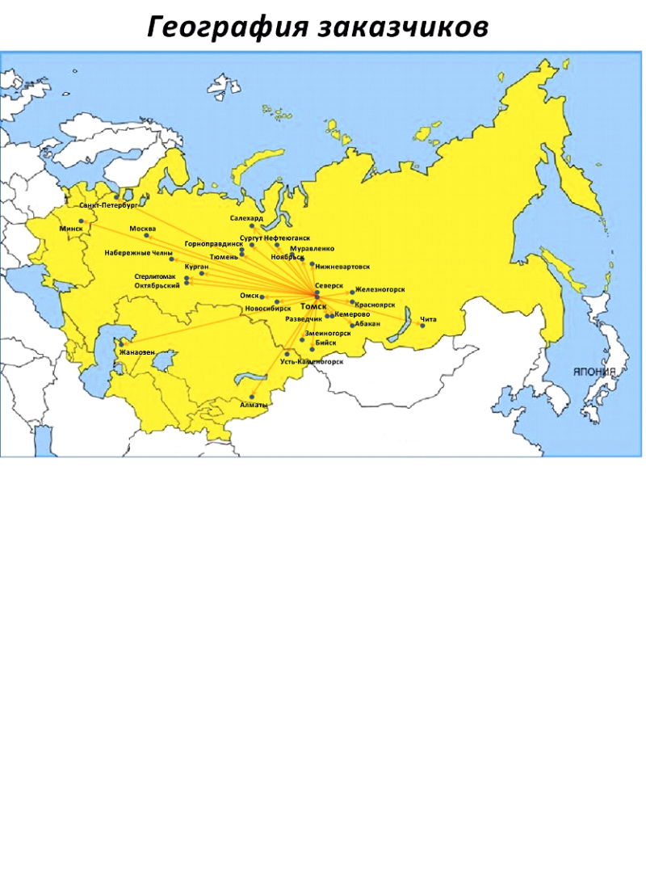

// заказчики
Нам доверяют геофизики пяти стран
Горнодобывающие и нефтесервисные компании, геологоразведка, атомная отрасль и водоканалы — от Минска до Читы.

// география поставок
Россия, Казахстан, Узбекистан, Беларусь
Приборы работают на угольных разрезах Кузбасса, урановых месторождениях Забайкалья, в нефтесервисе Западной Сибири и на объектах атомной отрасли.
- 01НПЦ по геологииРеспублика Беларусь, г. Минск
- 02АО «КузбассРазрезУголь»г. Кемерово
- 03АО «Сибирский химический комбинат»г. Северск
- 04АО «Сибирское ПГО»г. Красноярск
- 05АО «Узбекгеологоразведка»Республика Узбекистан, г. Ташкент
- 06АО «Узеньпромгеофизика»Республика Казахстан, г. Жанаозень
- 07АО «Хиагда»г. Чита
- 08ГБУ «Мосгоргеотрест»г. Москва
- 09МП «Томскводоканал»г. Томск
- 10ООО «Бурсиб-Н»г. Новосибирск
- 11ООО «Велко»г. Москва
- 12ООО «Газпромнефть НоябрьскНефтегазГеофизика»г. Ноябрьск
- 13ООО «Геомайн»г. Кемерово
- 14ООО «Ленинск-Кузнецкая геофизическая партия»г. Ленинск-Кузнецкий
- 15ООО «Октябрьский завод каротажного оборудования» ВНИИГИСг. Октябрьский
- 16ООО «Распадская угольная компания»г. Новокузнецк
- 17ООО «Техногео»Скважинные приборы электрического каротажа
- 18ООО «Юганскнефтегазгеофизика»г. Нефтеюганск
- 19ООО «Южно-Кузбасское ГРУ»г. Новокузнецк
- 20ТОО «Акпан»Республика Казахстан, г. Актобе
- 21ФГУП «ГидроСпецГеология»г. Москва
- 22ФГУП «НО РАО», Железногорский филиалг. Железногорск